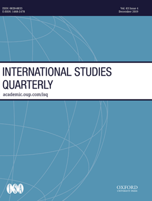

收录于合集 #新刊速递 123个
_
期刊简介

《国际研究季刊》（International Studies Quarterly）是国际研究协会的旗舰期刊，由牛津大学出版社每年发行四期，旨在发表与国际研究中重要理论性、实证性、规范性主题相关的领先学术成果。根据Journal Citation Reports的数据，2018年该期刊的影响因子为2.172。_
本期编委
【编译】 贺凡熙 金琳 刘潇昱 蔡宇 陈舜波
【校对】 徐垚晟 曹鹏鹏
【审核】 金磊
【排版】 赵怡雯
本期目录
1. Primary Resources, Secondary Labor: Natural Resources and Immigration Policy
资源第一、劳工第二： 自然资源与移民政策
2. Measuring Racial Bias in International Migration Flows
衡量跨国迁徙中的种族偏见
3. The Diplomatic Presentation of the State in International Crises: Diplomatic Collaboration during the US-Iran Hostage Crisis
国际危机中国家的外交展示： 美伊人质危机中的外交合作
4. Destroying Trust in Government: Effects of a Broken Pact among Colombian Ex-Combatants
对政府信任的破坏： 哥伦比亚前武装人员间废弃和平协议的影响
5. Do Democracies Possess the Wisdom of Crowds? Decision Group Size, Regime Type, and Strategic Effectiveness
民主国家拥有群体智慧吗?论决策群体的规模、政权类型与战略有效性
1.
资源第一、劳工第二：自然资源与移民政策
【题目】 Primary Resources, Secondary Labor: Natural Resources and Immigration Policy
【作者】 Adrian J. Shin，科罗拉多大学博尔德分校政治学系助理教授
【摘要】
本文认为，拥有丰富的自然资源导致发达民主国家对低技能移民的限制性政策。高价值自然资源的生产常常会排挤生产贸易商品的劳动密集型企业。当（贸易商品生产带来的）有利于移民的商业利益由于去工业化而消失时（即“荷兰病”），亲移民联盟在国内政治中的力量就会被削弱。由于没有强大的商业压力要求增加移民，于是政策制定者将移民拒之门外，以适应反移民者的利益。通过扩展有关24个富裕民主国家移民政策的最新数据集，作者发现，具有丰富石油资源的民主国家更有可能对低技能移民采取限制性的政策，尤其是这些国家在国际贸易中面临外国竞争的时候。本文的研究成果补充了以选民为基础的移民政策理论，为有关自然资源的政治经济学和国际移民的新兴研究做出了贡献。
This article argues that substantial natural resource wealth leads to more restrictive low-skill immigration policy in advanced democracies. High-value natural resource production often crowds out labor-intensive firms that produce tradable goods. When these proimmigration business interests disappear due to deindustrialization, also known as the Dutch Disease, the proimmigration coalition weakens in domestic politics. Without strong business pressure for increased immigration, policy-makers close their doors to immigrants to accommodate anti-immigrant interests. Using a newly expanded dataset on immigration policy across twenty-four wealthy democracies, I find that oil-richdemocracies are more likely to restrict low-skill immigration, especially when their economies are exposed to foreign competition in international trade. The results supplement the voter-based theories of immigration policy and contribute to an emerging literature on the political economy of natural resources and international migration.
【编译】 贺凡熙
【校对】 徐垚晟
**【审核】金磊
**
2.
衡量跨国迁徙中的种族偏见
【题目】 Measuring Racial Bias in International Migration Flows
【作者】 Andrew S. Rosenberg，俄亥俄州立大学政治学博士候选人
【摘要】
在跨国迁徙中是否存在种族偏见？尽管人们普遍认为种族主义和仇外心理会影响迁徙进程，但并没有系统的方法对此加以证明。因此，在本文中，作者构建了一种衡量方法——迁徙偏差（migration deviation）。迁徙偏差是指可观察到的国家间移民和基于非种族因素影响的模型（a racially blind model）预测的移徙流动之间的差异，该模型包含各种各样的政治和经济因素。通过衡量，作者进行了描述性统计分析，并提供证据表明，实际来自以黑人为主体国家的移民远少于根据非种族因素影响的模型作出的预测。这些结果为学者研究国际种族不平等开辟了新的道路。
Are international migration flows racially biased? Despite wide spread consensus that racism and xenophobia affect migration processes, no measure exists to provide systematic evidence on this score. In this research note, Iconstruct such a measure—the migration deviation. Migration deviations are the difference between the observed migration between states, and the flow that we would predict based on a racially blind model that includes a wide variety of political and economic factors. Using this measure, I conduct a descriptive analysis and provide evidence that migrants from majority black states migrate far less than we would expect under a racially blind model. These results pavea new way for scholars to study international racial inequality.
【编译】金琳
【校对 】徐垚晟 ****
**【审核】金磊
**
3.
****国际危机中国家的外交展示：美伊人质危机中的外交合作
【题目】 The Diplomatic Presentation of the State in International Crises: Diplomatic Collaboration during the US-Iran Hostage Crisis
【作者】 David E. Banks，美利坚大学国际服务学院教授级讲师
【摘要】
关于危机升级或减弱的理论通常关注的是冲突、压力和信息问题。然而，危机是否会升级有时可能取决于国内受众如何理解危机强度的减弱。在本文中，作者将Putnam的外交双层博弈模型与Erving Goffman的“互动秩序”和“面子”的概念相结合，创建出“外交展示”（Diplomatic Presentation）机制。作者论述了在各国认为外交成果符合共同利益，但存在被本国公众拒绝的风险的情况下，外交展示如何能够对达成这一成果起到帮助作用。成功的外交展示需要各国合谋，从而管理他们的行为表现，进行团队合作，并控制持异见者的影响。在评估这一机制时，作者分析了伊朗人质危机中的外交行为。在这场危机中，美国和伊朗的官员在一个戏剧性的“情景”中合谋串通并分别扮演了特定的角色，从而满足了美国和伊朗公众的情感需求。作者指出，展示这种情景的复杂性比其他重要理论更好地解释了危机的升级，而这一论点也有助于推动国际关系中有关象征性外交的研究，同时也挑战了危机具有对抗性这一普遍假设。
Theories of crisis (de-)escalation often focus on conflict, stress, and information problems. However, crisis (de-)escalation may sometimes hinge on how de-escalation is interpreted by domestic audiences. In this article, I combine Putnam’s two-level games model of diplomacy with Erving Goffman’s concepts of interaction order and face to create a mechanism I call “diplomatic presentation.” I show how diplomatic presentation can be instrumental for the crafting of diplomatic outcomes that states believe are in their mutualinterest but that run the risk of being rejected by their domestic publics. Successful diplomatic presentation requires that states collude together to manage their performance, engage in teamwork, and control the impact of unsympathetic audiences. In evaluating this mechanism, I analyze the diplomacy surrounding the Iran Hostage Crisis. During this crisis, regime officials from the United States and Iran colluded in a the atrical “scenario,” in which both sides adopted specific roles in order to satisfy the sentiments of US and Iranian publics. I show that complications regarding the presentation of this scenario explain escalation of the crisis better than prominent alternatives. This argument contributes to the growing literature on symbolic diplomacy in international relations, while also challenging common assumptions about the adversarial nature of crises.
【编译】 刘潇昱
【校对】 徐垚晟
**【审核】金磊
**
4.
对政府信任的破坏：哥伦比亚前武装人员间废弃和平协议的影响
【题目】 Destroying **** Trust in Government: Effects of a Broken Pact among Colombian Ex-Combatants
【作者】 Joakim Kreutz，瑞典斯德哥尔摩大学政治学系副教授；瑞典乌普萨拉大学冲突与和平研究中心兼职研究员；Enzo Nussio，瑞士苏黎世联邦理工学院安全研究中心资深研究员
【摘要】
国家内战后冲突各方的不信任是持久和平的主要障碍。然而，现有研究主要聚焦于精英层面的互动，忽略了检验政府和武装组织中的普通士兵间的信任关系。这种信任关系在冲突后的国家稳定进程中尤为重要。本文使用的案例是2008年哥伦比亚政府将哥国前准军事组织高层领导人引渡至美国的意外决定，从而考察和平协议的废弃如何影响了前武装组织的普通士兵对政府的信任。在理论上，当政府被认为牺牲个人权益时，政府可能失去工具性信任；当政府被认为背弃已作出的承诺时，政府可能失去规范性信任。运用准实验测量的证据，本文发现引渡事件显著降低了前准武装组织普通士兵对政府的信任，但在对照组中，与和平协议无关的前游击队普通士兵对政府的信任并未显著降低。尽管前准武装组织成员被认为具有投机主义特征，但本文的案例研究仍然表明，与失去工具性信任相比，失去规范性信任更有可能是哥伦比亚政府信任受侵蚀的原因。
Mistrust between conflict parties after civil waris a major hurdle to sustainable peace. However, existing research focuses onelite interactions and has not examined the trust relationship between government and rank-and-file members of armed groups, despite their importance for postconflict stability. We use the unexpected decision of the Colombian government to extradite top- level former paramilitary leaders to the United States in 2008 to identify how a peace deal reversal influences ex-combatants’trust in government. In theory, they may lose trust for instrumental reasons, if they suffer personal costs, or for normative reasons, if they think the government is failing its commitments. Using quasi-experimental survey evidence, we find that extradition decreases trust substantially among ex-paramilitaries, but not in a comparison group of ex-guerrillas not part of the same peace deal. Even though paramilitaries are seen as particularly opportunistic, our evidence suggests that normative rather than in strumentalist considerations led to trust erosion.
【编译】 蔡宇
【校对】 曹鹏鹏
【审核】金磊
5.
民主国家拥有群体智慧吗?论决策群体的规模、政权类型与战略有效性
【题目】 Do Democracies Possess the Wisdom of Crowds? Decision Group Size, Regime Type, and Strategic Effectiveness
【作者】 David Blagden，英国埃克塞特大学政治系战略与安全研究所高级讲师
【摘要】
为什么民主国家能够避免彼此之间的战争，同时又能在充满冲突的国际政治中寻求自身利益？Brad LeVeck和Neil Narang在《国际研究季刊》上发表的最新研究完美地解答了这个长期存在的问题。“群体智慧”是指一个足够庞大的非专业群体比一个小众群体更有可能对一个连续变量做出准确的估计，即使这个小众群体拥有相关专家。根据这一逻辑的实证数据，他们认为，民主国家的战略优势在于其庞大、多样化的决策群体。这种观点认为，如果这种群体智慧能够让民主国家准确地评估他国的能力和意图，那么在最大化自身利益的同时，它们应该比其他政权更能避免谈判失败，即诉诸战争。但不幸的是，民主外交政策的制定却损害了群体智慧机制。因此，这篇文章阐明了群体智慧支撑民主和平这一论点的关键缺陷，然后继续解释了无论政权类型，群体智慧为何仍对战略有效性产生重要影响。
What is it about democracies—if anything—that enables them to avoid war with each other while navigating conflictual international politics in pursuit of their own interests? Recent research in International Studies Quarterly by Brad LeVeckand Neil Narang (2017) provides an elegant new answer to this long standing question. Drawing on “wisdom of crowds” logic—the insight that alarge-enough group of inexpert judges is more likely to average towards an accurate estimate of a continuous variable than a smaller group, even when the smaller group contains relevant experts—supported by experimental evidence, they suggest that democracies’ strategic advantages lie in their large, diverse decision-making communities. If such crowd wisdom equips democracies to accurately assess others’ capabilities and intentions, so the argument goes, then they should be better than alternative regime types at maximizing their own interests while still avoiding the bargaining failure that is resort towar. Unfortunately, however, the politics of democratic foreign policy- making compromise the crowd-wisdom mechanism. This response article thus elucidates key flaws in the argument that crowd wisdom underpins democratic peace, before progressing to explain how the crowd-wisdom insight nonetheless carries important implications—irrespective of regime type—for strategic effectiveness.
【编译】 陈舜波
【校对】 曹鹏鹏
【审核】金磊
**
**
【新刊速递】第01期 | Review of International Studies Vol.45, No.4, 2019
【新刊速递】第02期 | International Relations Vol.33, No.3, 2019
【新刊速递】第03期 | International Organization Vol.73, No.3, 2019
【新刊速递】第04期 | World Politics, Vol.71, No.4, 2019
【新刊速递】第05期 | European Journal of International Relations
【新刊速递】第06期 | Security Studies, Vol.28, No.4, 2019
【新刊速递】第07期|International Security, Vol 44, No. 2, 2019
【新刊速递】第08期| Cambridge Review of International Affairs,Vol.32,No.4
【新刊速递】第09期| International Relations of Asia-Pacific Vol.19,No.3
【新刊速递】第10期 | International Studies Review, Volume.21, No.3,
2019
【新刊速递】第11期|Cooperation and Conflict, Vol. 54, No. 4,
2019【新刊速递】第12期
| International Affairs, Vol.95,
No.6，2019
【新刊速递】第13期|Chinese Journal of International Politics, No.4,
2019
【新刊速递】第14期|Chinese Journal of International Politics, No.3, 2019
【新刊速递】第15期 | International Organization, No.4, 2019
【新刊速递】第16期 | International Studies Quarterly, No.4, 2019
【新刊速递】第17期 | World Politics, Vol.72, No.1, 2020
【新刊速递】第18期 | Security Studies Vol.28, No.5, 2019
【新刊速递】第19期 | Review of International Studies, No.1, 2020
国政学人
支持学术公益与知识传播
微信扫一扫赞赏作者 __赞赏
已喜欢，对作者说句悄悄话
取消 __
发送给作者
发送
最多40字，当前共字
上一页 1/3 下一页
长按二维码向我转账
支持学术公益与知识传播
受苹果公司新规定影响，微信 iOS 版的赞赏功能被关闭，可通过二维码转账支持公众号。